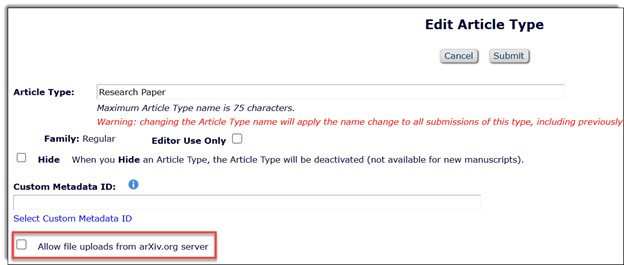

The purpose of this document is to guide JMs through the steps involved in Editorial Manager’s (EM) new submission experience.
The new submission experience simplifies the process by only requesting relevant information early on, recognizing that most authors don’t advance past the desk decision.
Authors want a faster submission experience without too many requirements and EM’s new submission experience allows for this. Subsequently, EM’s new submission experience should reduce the number of submissions sent back to author with the reduced requirements and by building completeness checks.
System navigation is improved as authors are guided through a simplified submission process, with a clear map showing where they are at any given moment.
The new submission experience is a key step to roll out the HTML version of the manuscript (Interactive Content Article), which will enable alignment of the manuscript to a unified format and facilitate checks for any missing elements.
When the ICA version of the article is created as part of the new submission experience (this is in development but not yet available), it will be available for authors to review and subsequently Editors and reviewers to use.
TIP: See the Bite-Size session on Editorial Manager's New Submission Experience for further guidance.
| Section | Change |
|---|---|
| Submissions Questions | Information on questionnaires created by the SHINE Journal Configuration team has been added. |
| Appendix | Link to known issues relating to the new submission experience has been provided. |
EM’s new submission experience is a simplified submission system that sits outside of EM and authors need to use their ID+ login credentials to login instead of logging in to EM. A single ID+ account allows authors to submit to all EM’s new submission experience journals.
EM’s new submission experience has been developed to improve the manuscript submission journey for authors.
Currently the system only handles the initial submission by the author. On submission it is transferred to EM via the ingest service.
EM’s new submission experience is being actively developed and will see changes over the course of 2025 and 2026.
Long-term intention is that this can be utilized by third party publishers.
EM’s new submission experience currently supports only original and special issue submissions of regular article types. It does not support article transfer submissions and Invited workflow (proposals) submissions.
EM’s new submission experience does not support revisions and send back to author submissions workflows.
EM’s new submission experience supports the following workflows:
EM’s new submission experience submissions are directed to EM via the ingest service. Hereafter the submission follows the regular EM workflow.
EM’s new submission experience does not currently support revisions, but this is something that will be supported in the future.
EM’s new submission experience follows the configurations as set within EM.
| Feature | Supported | Not yet supported | Comments |
|---|---|---|---|
| CRO workflow | ✓ | ||
| Direct-to-Editor workflow based on section or category and rotation | ✓ | ||
| Upload to SSRN | ✓ | ||
| Declaration of competing interests | ✓ | ||
| CRediT information | ✓ | ||
| Data availability statement | ✓ | ||
| Publishing Options | ✓ | ||
| Direct-to-Editor by author request workflow | X | This applies only for journals with D2E workflow where authors can select Editors from a drop down. | |
| Double anonymous peer review workflow | ✓ | ||
| Submission fees / page charges | X | To clarify, page charges is about those journals in which authors are told that they will be charged per page if the article is accepted. All journals with submission fees/page charges have been excluded from EM’s new submission experience. However, if JMs are aware of your journal asking for page charges, write to NSE-Rollout@elsevier.com. | |
| Direct upload from ArXiv | X | This can be checked in “Edit Article Types”. See the screenshot below this table. | |
| Checks on statements for human/animal studies | X | JMs can check submission questions around human/animal studies configured in EM. Flag it to EM's new submission experience team. Give screenshots while writing to EM's new submission experience rollout team for any queries. | |
| Non-English submission site | X | ||
| Registered Reports | X | Journals supporting the article type ‘Registered Reports’, but note that there are some journals using an old workflow. | |
| Systematic reviews | X | Journals that have a dedicated article type configured for systematic reviews, other than the regular article types like “Reviews” or “Review Article”. | |
| Proposal menu for invited content | X | Journals that solely receive manuscripts through the proposal menu on EM cannot transfer to EM’s new submission experience yet, whereas journals that receive some manuscripts through the proposal menu can. |
Go to Author Guide to Editorial Manager’s new submission experience to view a video demonstration of EM’s new submission experience.
Only Set "Enter Keywords" Preferences and Set "Submit Abstract" Preferences can be set as Required. All the other parameters must be either Optional or Hidden as per journal needs for new submissions.
| Article type parameters | New Submission |
|---|---|
| Set Secondary "Full Title" Preferences | Optional or Hidden |
| Set "Short Title" Preferences | Optional or Hidden |
| Set Secondary "Short Title" Preferences | Optional or Hidden |
| Set "Funding Information" Preferences | Optional or Hidden |
| Set "Submit Abstract" Preferences | Required, Optional or Hidden |
| Set Secondary "Submit Abstract" Preferences | Optional or Hidden |
| Set "Enter Keywords" Preferences | Required, Optional or Hidden |
| Set "Enter Secondary Keywords" Preferences | Optional or Hidden |
| Set "Select Classifications" Preferences | Optional or Hidden |
| Set "Enter Comments" Preferences | Optional or Hidden |
| Set "Suggest Reviewers" Preferences | Hidden |
| Set "Oppose Reviewers" Preferences | Optional or Hidden |
| Set "Respond to Reviewers" Preferences | Hidden |
| Set "Request Editor" Preferences | Optional or Hidden |
| Set "Select Region of Origin" Preferences | Optional or Hidden |
| Set "Waiver Request" Preferences | Hidden |
| Field Size Limitations | Value |
|---|---|
| Limit the Short Title to: | Blank |
| Limit the Comments to: | Blank |
| Limit the Waiver Request to: | Blank |
| Maximum Number of Authors: | Blank |
Journals rolling out to EM’s new submission experience use a standard list of Submission Item Types (SITs).
The SITs used on your journal(s) are mapped against the new list of SIT names.
In some instances, several of the current SIT names are consolidated into a single new SIT name. In these cases, only one new SIT replaces all the previous ones (example: “MATLAB files”, “Phylogenetic trees” and “Supplementary material” all map to one new SIT “Supplementary material”).
Some SITs are being retired because ScienceDirect no longer displays 3D models, which impacts their performance.
The current settings for SITs in terms of whether they are set as ‘Required’, ‘Optional’, or ‘Hidden’ are carried over and remain the same once your journal is rolled out to the new submission experience.
Once a journal is selected for roll out to EM’s new submission experience, the SIT names are updated via a script.
Do not modify the SITs as they are mapped to corresponding SITs in the new submission experience.
Any inconsistencies disrupt the submission workflow.
If a change or new SIT is required, raise this with your team lead or APS in the first instance. APS can contact the Journal Configuration Governance mailbox for further guidance.
Raise a ticket to APS via OSvC with the prefix “[NSE]” in the subject line.
For journals on EM’s new submission experience, all authors are redirected to EM’s new submission experience to submit.
Submission questions in EM are no longer applicable. However, information from the author must be passed from EM’s new submission experience back to EM.
Before a journal rolls out to EM’s new submission experience, a backend script hides the current questionnaires in EM and replaces them with a questionnaire aligned with the new submission experience (only listing the questions for which information needs to be passed back).
A new standard list of submission questions (Submission questions in Editorial Manager) and requirements (Submission Requirements for Authors) have been composed based on analysis of current questions in EM and the guide for authors.
The questions have been reviewed and approved by the Governance Board.
These questions have been passed on to the new submission experience as business requirements for the submission process and are under development.
In the future, there will be a possibility for society journals to add custom questions.
You can no longer change or add submission questions once a journal has rolled out to the new submission experience except for the following standard submission questions:
Before they can be added, JMs must contact the Leap mailbox.
The SHINE Journal Configuration team creates the below questionnaires as part of the roll out to NSE action.
The above questionnaires are not created by default for all journals. They are created if the DAS and/or the SSRN question is already configured within the journal and presented to the author during the submission process. See configuration details below:
If there is a need for an additional submission question to be added to the standard list for the new submission experience implementation, then contact your site APS with a valid business reason via OSvC with the prefix “[NSE]” in the subject line.
APS validate the request to check if an alternative method can be used instead of adding a new submission question.
APS must contact the Journal Configuration Governance team with the request, stating the submission question and the business justification for further guidance/approval.
The only author parameter fields that can be set as ‘Required’ (they can be made ‘Optional’ or ‘Hidden’) are:
Submissions get stuck if more fields are set as ‘Required’ other than those listed above, as NSE only supports collecting author details for these fields.
Specific restrictions apply when editing multiple article types and creating special issue article types when a journal is rolled out to EM’s new submission experience. See Best Practice for Article Type Amendments for further guidance.
Once your journal has rolled out to EM’s new submission experience, add the following to your JIF to make sure that no restricted changes are made in EM:
Once a journal adopts EM’s new submission experience, certain changes require prior approval from APS (raise a task to APS via OSvC to confirm feasibility). Unauthorized changes can cause submission issues, as information will mismatch, preventing successful processing through the journal’s workflow.
The Non Solus page ‘Leap roll out information’ aimed at Publishers regarding Leap rollouts may also be useful for JMs.
To request a rollout delay or raise any concerns after rollout to EM’s new submission experience, Publishers can contact the Leap Rollout mailbox.
JMs can also contact the Leap Rollout mailbox if they get Editor concerns after rollout.
To request rollback for a journal, the Publisher must contact the Leap Rollout mailbox and include the EM acronym, Title and the reason for roll back (include data if available).
Once the rollback is approved by the Leap Team/Publisher, contact APS via an OSvC incident using the following template to initiate the rollback process. Include the approval e-mail(s) as attachment(s).
Once APS confirms that the journal has been rolled back, de-link the NSE questionnaire linked to the article types and reinstate the previous questionnaire configured for the journal.
For example, if the previous questionnaire linked to the article types was Author Questionnaire, then replace the NSE Questionnaire with the Author Questionnaire for all active article types within the journal.
Do not re-enable any hidden SITs. If there is a need for an additional SIT, consult with APS to see if there is an alternative in the standard list. If no such alternative exists, contact the Journal Configuration Governance team.
Update JIF with details of the rollback.
Once your journal rolls out to EM’s new submission experience, an email notification is sent to you – within this email there is a tracker where you can confirm the JIF has been updated as requested in the notification email.
Additionally, there are weekly internal aftercare calls that all JMs with journals rolled out to EM’s new submission experience must attend (attendance is recorded). The aim of these meetings is to answer any questions and provide any updates relating to EM’s new submission experience.
For reporting purposes, all queries related to EM’s new submission experience are classified under the following category in OSvC:
Classify>System>New submission experience
Ensure to select this category when handling queries relating to EM’s new submission experience. The screenshot below shows where to find this option in OSvC:
Once your journal rolls out to EM’s new submission experience, you are added to a chat page which is monitored by the JM champions. Any questions you have can be posted here and will be answered by someone from the chat group.
| Location | JM Champion |
|---|---|
| Chennai | Mehroon Nesa Farooqui (HMS) Shermila Natarajan (PS) Preetha Baskaran (LS) |
| Beijing | Xiaoguo Liu |
| Exeter & US | Claire Brimilcombe Nicholas Reay |
To view manuscripts submitted via EM’s new submission experience which have not been successfully submitted and are therefore stuck, go to NSE - Operational Dashboard.
For FAQs, go to Editorial Manager's new submission experience JM FAQ's.
The Non Solus page Editorial Manager's new submission experience – information for Journal Operations contains information on the new submission experience for Journal Operations, including product demo videos, Leap information and a JM toolkit with additional resources.
For a list of known issues relating to the new submission experience, go to Issues Identified Post Rollout.
As part of the preparation for a journal to rollout to EM’s new submission experience, the following configurations in EM are updated via script run. No action is required from the JMs. See the below table for the full list of changes that will be made to each “Regular” family article type. Do not make any alterations to these configurations.
| Where | What | How | Desired Value in EM |
|---|---|---|---|
| Sys Admin->PM-->Edit Article Types* | Field Size Limitations: | There should not be any Field Size Limitations for the below | |
| Limit the Comments to: | blank | ||
| Limit the Waiver Request to: | blank | ||
| Sys Admin->PM-->Edit Article Types* | Article Type Parameters: | The below parameters should be either "Optional" or "Hidden" as per journal needs for new submissions. If any of the below parameters is "Requried" for new submission, change that to "Optional". | |
| Set "Enter Comments" Preferences: | Optional/Hidden | ||
| Set "Respond to Reviewers" Preferences: | Hidden | ||
| Set "Request Editor" Preferences: | Optional/Hidden | ||
| Set "Select Region of Origin" Preferences: | Optional/Hidden | ||
| Set "Waiver Request" Preferences: | Hidden | ||
| Set "Funding Information" Preferences: | Optional/Hidden |
*This clean up needs be done for all the “Regular” family article types except Invited article types.